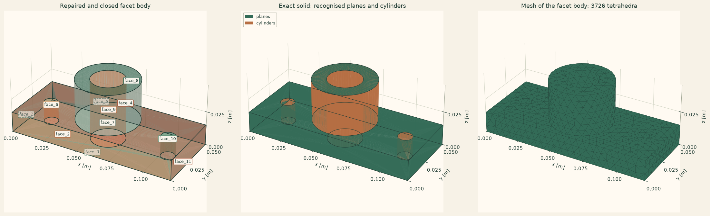

Docs › Examples › STL import and facet repair
CAD import · 3D
STL import and facet repair
A damaged STL file of a pillow block, a third of its triangles facing inwards and six missing, turned into a closed body and an exact CAD solid.

What it computes
OneSimulation reads the triangles as a facet body, turns them outwards, fills the holes from their rims, recognises the planes and cylinders and rebuilds the part as an exact solid, which is drilled further and meshed like any CAD part. The facet body is meshed directly as well. The script that writes the damaged STL file comes with the notebook.
What it checks
The six open rims are found and closed without a new point; the facet body has the closed-form volume of 112.902 cm3 to -0.03 % (polygonal bores), the rebuilt solid with 7 planes and 4 cylinders to -2.6e-9, and the two meshes of 3,726 and 8,038 tetrahedra fill their bodies within 0.3 %.
The notebook
The complete notebook, cell by cell. Run it to produce the figures and the comparison printout.
STL is the most common exchange format for scans, 3D printing and meshes from other programs. It stores loose triangles: no faces, no edges, no units, often no consistent orientation, sometimes with holes. Before such a file can be meshed for a simulation it has to become a closed body.
| step | call | result | |---|---|---| | read | load("part.stl") | a FacetBody: triangles joined at their corners, grouped into faces at sharp edges | | orient | body.repaired() | every triangle faces out of the material | | close | body.closed() | holes in the skin filled from their rims, no point added | | rebuild | body.exact() | planes, cylinders, cones, spheres and tori recognised; an exact CAD solid | | mesh | FacetMesher on the facets or TetrahedralMesher on the exact solid | tetrahedra |
The file stl_import_facet_repair.stl is written by stl_import_facet_repair_geometry.py, which builds the part with the CAD objects of OneSimulation, writes its triangles and damages them on purpose.
Reference. The pillow block in closed form: base plate \(L\times W\times t\), boss of radius \(R\) and height \(h\), two bolt holes of radius \(r_h\) through the plate and a bore of radius \(r_b\) through plate and boss: \(V = LWt + \pi R^2 h - 2\pi r_h^2 t - \pi r_b^2 (t + h)\).
import numpy as np
from collections import Counter
from onesim.cad.d3 import Cylinder
from onesim.cad.exchange import load
from onesim.meshing import FacetMesher, TetrahedralMesher
from onesim.meshing.quality import quality
from onesim.visualization import theme, plots
theme.set()Reading the file
The units of an STL file are not stored; the file is in metres. holes() lists the open rims of the skin.
raw = load("stl_import_facet_repair.stl")
exact = 0.12 * 0.05 * 0.015 + np.pi * 0.022**2 * 0.03 - 2 * np.pi * 0.005**2 * 0.015 - np.pi * 0.012**2 * 0.045
print(f"{len(raw.points)} points, {len(raw.triangles)} triangles, {len(raw.faces)} faces found at sharp edges")
print(f"closed: {raw.is_closed}, valid: {raw.is_valid}, open rims: {len(raw.holes())} with {[len(rim) for rim in raw.holes()]} edges")Repair
Orientation first, then the holes. The repaired skin encloses a volume again.
oriented = raw.repaired()
closed = oriented.closed()
print(f"after repaired(): closed {oriented.is_closed}, open rims {len(oriented.holes())}")
print(f"after closed(): closed {closed.is_closed}, valid {closed.is_valid}, {len(closed.triangles)} triangles, "
f"{len(closed.points)} points (none added)")
print(f"volume of the facet body {closed.measure * 1e6:.4f} cm3, closed form {exact * 1e6:.4f} cm3, "
f"deviation {closed.measure / exact - 1:+.2%} (round walls as polygons)")From triangles to an exact solid
exact() fits a plane, cylinder, cone, sphere or torus to every face and rebuilds the solid from them. The bore and the holes are round again, so the volume is that of the part, not of its polygon. The rebuilt solid is a CAD object like any other: here a cross hole is drilled through the boss.
solid = closed.exact()
print(f"exact solid: valid {solid.is_valid}, faces {dict(Counter(face.kind for face in solid.faces))}")
print(f"volume {solid.measure * 1e6:.5f} cm3, closed form {exact * 1e6:.5f} cm3, deviation {solid.measure / exact - 1:+.1e}")
drilled = solid - Cylinder(radius=0.003, length=0.06, origin=(0.06, -0.005, 0.035), axis=(0, 1, 0)).named("cross_hole")
print(f"with a cross hole of 6 mm: {(solid.measure - drilled.measure) * 1e9:.1f} mm3 removed")
on_facets = FacetMesher(target_size=0.005).generate(closed)
on_solid = TetrahedralMesher(target_size=0.005).generate(drilled)
view = plots.Camera(elevation=30, azimuth=-60)
fig = plots.figure(1, 2, size=(16, 6))
plots.geometry(raw, camera=view, title="Imported STL: faces found at sharp edges", ax=fig[0])
plots.mesh(on_solid, groups=("all",), legend=False, camera=view, title=f"Rebuilt solid with cross hole: {on_solid.cell_count} tetrahedra", ax=fig[1])
plots.show()Results
Both meshes against the closed-form volume; the mesh of the facet body inherits the polygonal bore, the mesh of the exact solid lies on the true cylinders.
for name, mesh, reference in (("mesh of the facet body", on_facets, exact),
("mesh of the exact solid with cross hole", on_solid, drilled.measure)):
report = quality(mesh)
print(f"{name:40s} {mesh.cell_count:6d} cells, volume {report['size'].sum() * 1e6:.4f} cm3 "
f"against {reference * 1e6:.4f} cm3 ({report['size'].sum() / reference - 1:+.2%}), smallest shape {report['shape'].min():.2f}")Figure
The repaired facet body with its open rims closed, the exact solid with its recognised faces, and the mesh of the facet body.
fig = plots.figure(1, 3, size=(20, 6))
plots.geometry(closed, camera=view, title="Repaired and closed facet body", ax=fig[0])
plots.geometry(solid, selection={"planes": solid.boundaries.plane, "cylinders": solid.boundaries.cylinder}, labels=False,
camera=view, title="Exact solid: recognised planes and cylinders", ax=fig[1])
plots.mesh(on_facets, groups=("all",), legend=False, camera=view, title=f"Mesh of the facet body: {on_facets.cell_count} tetrahedra", ax=fig[2])
plots.show()Going further
Read the same part from OBJ, PLY or 3MF (load takes them all), give the unit with load("part.stl", unit="mm"), or fillet the edges of the rebuilt solid before meshing.